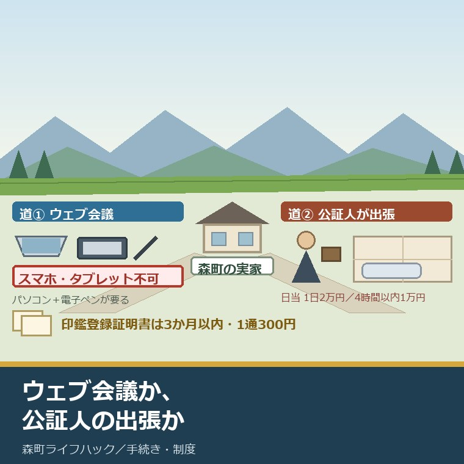
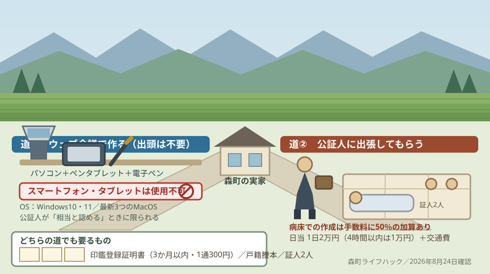
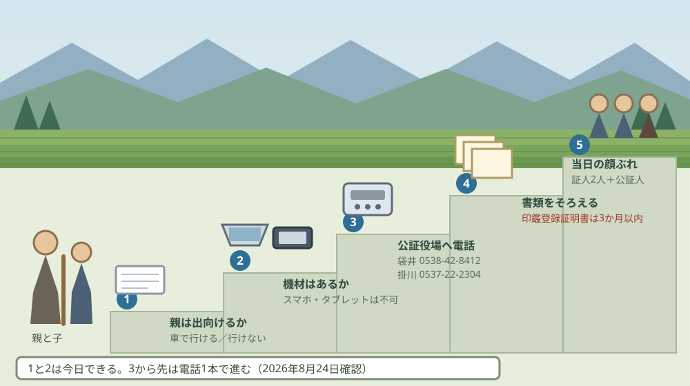

公正証書遺言がウェブ会議で作れる｜森町から遺言を残す二つの道

この記事の要点
Q. 公正証書遺言がウェブ会議で作れると聞きました。外出が難しい森町の親でも使えますか。
A. 令和7年10月1日から、嘱託人が希望し公証人が相当と認めればウェブ会議で作れます。ただし日本公証人連合会の案内ではスマートフォンとタブレットは使えず、パソコンと電子ペンが要ります。寝たきりに近い方は、従来からある公証人の出張のほうが現実的です。
静岡県周智郡森町（遠州森町）の実家に、80代の親が一人で住んでいる。家と畑の行き先だけは、元気なうちに書き残しておいてほしい。この記事は、そう考えているご家族に向けて書いています。
2025年10月1日に、公正証書の作り方が変わりました。公証役場へ出向かなくても、ウェブ会議で公正証書遺言を作れる道ができています。報道では「遺言のデジタル化」と呼ばれた話です。
ただ、「出向かなくてよくなった」と「うちの親でも使える」は別の話です。日本公証人連合会が出している機器の条件を読むと、外出が難しい方ほど条件から遠いことが分かります。
今日は2026年8月24日。施行日の令和7年10月1日から、10か月半が過ぎました。制度としてはもう動いています。
森町の家から遺言を残す道は、いま二つあります。ウェブ会議と、公証人の出張です。どちらが向くかは、親の体の状態と、家にパソコンがあるかで変わります。順に並べます。
公式情報から確定できること
2026年8月24日時点で、法務省民事局、日本公証人連合会、静岡地方法務局、森町公式から確認できたことを並べます。公正証書に係る一連の手続は、令和7年10月1日に全面的にデジタル化されました。出典は記事の末尾に載せています。
一つ目。根拠になった法律の名前は長いものです。法務省民事局の資料によれば、民事関係手続等における情報通信技術の活用等の推進を図るための関係法律の整備に関する法律（令和5年法律第53号）による公証人法の一部改正で、書面と対面を前提にしていた手続が全面的にデジタル化されました。
二つ目。変わったのは4つの場面です。同じ資料によれば、嘱託（申請）、嘱託人の陳述と内容確認、公正証書原本の作成・保存、正本・謄抄本の交付という4段階が、それぞれ書き換えられました。
三つ目。公証役場へ出頭せずに申し込めるようになりました。従来は役場に出頭し、印鑑証明書などの書面で本人確認をしていました。改正後は、嘱託に係る情報に電子署名と電子証明書を付け、インターネットからメールで送って本人確認を済ませられます。
四つ目。ウェブ会議が使えるのは、条件がそろったときだけです。法務省民事局の資料は「嘱託人が希望し、かつ、公証人が相当と認めるときは、ウェブ会議の利用が可能に」と記しています。希望すれば必ず使える仕組みではありません。
五つ目。その「相当と認める」の基準は、通達で全国統一に決められています。同じ資料は「ウェブ会議の相当性については、全国で統一的な運用となるよう、通達で基準を規定」と書いています。役場ごとの裁量で判断がばらつかないようにする、という説明です。
六つ目。リモート方式の要件は3つあります。日本公証人連合会のリーフレット（2025年8月8日版）によれば、嘱託人または代理人によるリモート方式利用の申出があること、そのリモート参加について他の嘱託人に異議がないこと、公証人がリモート参加を相当と認めること、の3つです。
七つ目。スマートフォンとタブレットは使えません。同じリーフレットは、リモート参加に必要な機器として「ウェブ会議に参加可能なパソコン」を挙げ、そこに「（スマートフォン・タブレットは使用できません）」と明記しています。
八つ目。電子サインのための機器も別に要ります。同じ資料によれば、必要なのは「タッチ入力可能なディスプレイ又はペンタブレット＋電子ペン」です。電子サインとは、電子ペンでディスプレイなどに手書きするものだと注記されています。
九つ目。パソコンの中身にも条件があります。同じリーフレットによれば、OSはWindows10、Windows11、または最新3つのバージョンのMacOS。Windowsにインストールされている.NETは4.5CLR以降。ブラウザは最新3つのバージョンのMicrosoft Edge、Google Chrome、Firefox、または最新2つのバージョンのSafariです。
十番目。そのパソコンで受信できるメールアドレスも要ります。ウェブ会議への招待メールと、電子サインの依頼メールがそこへ届くためです。家族のスマートフォンにだけ届いても、手続は進みません。
十一番目。当日の流れは6段階です。同じリーフレットによれば、招待メールからウェブ会議に参加し、公証人が映像と音声で本人確認と意思確認を行い、案文を画面に表示して公証人が読み上げ、列席者が内容を確認し、公証人からのメール依頼を受けて列席者全員が電子サインを送信し、最後に公証人が電子サインと電子署名をして原本が完成する、という順です。
十二番目。公正証書は原則として電子データになりました。法務省民事局の資料によれば、原本は原則電子データで作成・保存され、嘱託人は電子サインのみで押印は不要です。公証人は電子サインに加えて官職証明書を用いた電子署名を行います。
十三番目。紙で作る場合も残っています。日本公証人連合会のリーフレットは、法律上、紙での作成が必要な場合として保証意思宣明公正証書等を挙げ、添付資料をPDF化できないなどデジタル作成が困難な場合も例外としています。
十四番目。受取方法は3つから選べます。同じ資料によれば、電子データを出力した書面を受け取る、インターネットからメールを受信して受け取る（クラウド経由でダウンロード）、自前のUSBメモリ等を使ってデータで受け取る、の3つです。
十五番目。どの役場でも使えるわけではありません。同じリーフレットの表紙には「10月1日以降、順次指定される指定公証人の役場でのみ利用可能となります」と書かれています。
十六番目。遺言公正証書には証人が2人要ります。日本公証人連合会は「証人二人以上」と定められているが公証実務では証人2名で作成される、と説明しています。ウェブ会議でも、この2人は必要です。
十七番目。必要書類は紙のままです。同じ案内によれば、遺言者本人の3か月以内に発行された印鑑登録証明書、遺言者と相続人との続柄が分かる戸籍謄本や除籍謄本、相続人以外へ遺贈する場合はその人の住民票等、不動産があれば登記事項証明書と固定資産評価証明書等、預貯金があれば通帳等またはコピーが要ります。
十八番目。手数料は目的の価額で決まります。日本公証人連合会が公表している改定後の表によれば、50万円まで3,000円、100万円まで5,000円、200万円まで7,000円、500万円まで13,000円、1,000万円まで20,000円、3,000万円まで26,000円、5,000万円まで33,000円、1億円まで49,000円です。
十九番目。遺言にはさらに13,000円が乗ります。同じ資料は「遺言公正証書、信託契約公正証書については、目的の価額が1億円以下の場合、手数料額に1万3000円が加算されます」と記しています。いわゆる遺言加算です。
二十番目。出張してもらう道は、以前からありました。日本公証人連合会は「遺言者が高齢で体力が弱り、あるいは病気等のために、公証役場に出向くことが困難な場合などには、公証人が、遺言者のご自宅や老人ホーム、介護施設、病院等に出張して、遺言公正証書を作成することが行われています」と説明しています。
二十一番目。出張には加算があります。同じ案内によれば、嘱託人の病床で作成したときは手数料額に50％が加算されることがあるほか、公証人の日当（1日2万円、ただし4時間以内の場合1万円）と、現地までの交通費がかかります。
二十二番目。森町から近い公証役場は2か所です。静岡地方法務局が公表している一覧によれば、管内の公証役場は8か所。そのうち森町に近いのは、袋井公証役場（袋井市高尾1129-1 袋井新産業会館キラット3階、電話0538-42-8412）と掛川公証役場（掛川市中央2-4-27 中央ビル5階、電話0537-22-2304）です。
二十三番目。森町の無料法律相談は年3回です。森町公式によれば、無料法律相談の開催日は6月1日、10月22日、2月4日の13時30分から16時30分。場所は森町町民生活センター1階・2階、定員は先着6名の予約制で、担当は住民生活課住民係（0538-85-6312）です。
二十四番目。印鑑登録証明書は1通300円です。森町公式によれば、印鑑登録ができるのは町内に居住し住民基本台帳に登録されている15歳以上の人で、登録できる印鑑は1人1個。証明書の交付手数料は300円で、代理人が申請する場合は「その場ではすぐに登録はできません」と書かれています。
二十五番目。農地は遺言があっても届出が要ります。森町公式によれば、農地を相続した場合、相続人は相続発生後10カ月以内に農地法第3条の3による届出をします。担当は森町の農地管理係（0538-85-6315）です。

この絵で描きたかったのは、新しい道が増えただけで、古い道が消えたわけではないという点です。ウェブ会議は便利ですが、条件がそろわない家では出張のほうが早い。二つを並べて比べる話であって、どちらかに乗り換える話ではありません。
森町の家に置き換えると、いくらかかるか
ここからは、公表された手数料の表を使って金額を割り戻します。私の計算であることを先に断っておきます。実際の額は財産の内容で変わるので、必ず公証役場で見積もってもらってください。
例として、森町の実家（土地と建物で1,500万円）と預貯金500万円の合わせて2,000万円を、子2人に1,000万円ずつ相続させる遺言を考えます。手数料は財産を受け取る人ごとに計算して合算するのが実務です。
1,000万円までの区分は20,000円ですから、2人分で40,000円。ここに遺言加算13,000円を足して53,000円になります。これはウェブ会議でも役場へ出向いても変わらない、基本の額です。
これを出張にすると、額が動きます。病床で作成した場合の50％加算が付くと53,000円が79,500円。4時間以内の日当10,000円を足して89,500円で、ここに交通費が別に乗ります。
差額は36,500円です。私の商売感覚でいえば、これは空き家の火災保険1年分や、庭木の伐採を1本頼んだときの費用と同じ桁です。「デジタル化で安くなる」という話ではなく、家に来てもらう手間を買う額だと考えたほうが近い。
一方、ウェブ会議には別の出費があります。タッチ入力ができるディスプレイか、ペンタブレットと電子ペンです。これを森町の実家に置いている家は、私が見てきた範囲ではほとんどありません。
機材をそろえる費用は、公表資料には書かれていません。私の見立てでは、日当1回分と同じ桁の買い物になります。これは私の推測であって、公表された金額ではありません。
もう一つ、人手の問題があります。証人2人を、当日その場に用意しなければなりません。ウェブ会議でも人数は減りません。心当たりがなければ、公証役場に紹介を頼めるかを先に聞いておくほうが早い。
紙の書類は、デジタル化しても紙のままです。3か月以内の印鑑登録証明書、戸籍謄本や除籍謄本、不動産があれば登記事項証明書と固定資産評価証明書。印鑑登録証明書は森町では1通300円ですが、期限があるので取る順番が効きます。
そして、遺言を書いても農地の届出は消えません。森町公式によれば、農地を相続した相続人は10カ月以内に森町の農地管理係へ届け出ます。畑や田んぼの引き継ぎは、田んぼや畑を相続した後の手続きをまとめた記事に順番を書きました。
山林がある家は、さらに別の話になります。持ち続けるか、国に引き取ってもらう道を考えるかで、遺言に書く内容が変わります。判断材料は相続土地国庫帰属制度を森町の山林で考えた記事に整理しています。
良い点：この改正の、よくできているところ
まず、令和7年10月1日の改正のよくできているところを数えます。注文の前に置くのが、私の書き方の順番です。
一つ目。出頭しなくてよい道が、正式にできました。これまでは、体が動かない人のために公証人が出向くしかありませんでした。遠方に住む家族が立ち会う場合も含めて、選択肢が一つ増えたのは前進です。
二つ目。相当性の基準を通達で全国統一にしたことです。「公証人が相当と認めるとき」という書き方は、放っておけば役場ごとに判断が割れます。そこを先に手当てしてあるのは、利用する側から見て安心できる設計です。
三つ目。押印が要らなくなりました。電子データで作る場合、嘱託人は電子サインだけで足ります。実印を持って行く、押し損じて押し直す、といった当日の手間が一つ減ります。
四つ目。受け取り方を3つから選べます。紙で受け取ってもいいし、メールでも、自前のUSBメモリでもいい。デジタル化を全員に強制していない点は、高齢の利用者が多い手続として現実的です。
五つ目。紙で作る例外を、先に明示しています。保証意思宣明公正証書等や、添付資料をPDF化できない場合は紙で作ると書いてある。できないことを先に書く資料は、実務では信用できます。
注文したい点：森町の家から見て足りないところ
その上で、一事業者として注文したい点を並べます。制度を作る側も公証役場も、限られた人数で動いていることは承知の上です。
一つ目。スマートフォンとタブレットが使えない点が、いちばん重い。森町で一人暮らしをしている80代の方が持っている機器は、たいていスマートフォンです。パソコンを日常的に使っている方は多くありません。
二つ目。電子サインの機材が、家庭にある道具ではありません。ペンタブレットと電子ペンは、絵や設計の仕事をしていなければ買う機会がない道具です。一度の手続のためにこれを買うか、と聞かれたら、私は迷います。
三つ目。どの役場が対応しているかが、利用者側から分かりにくい。「順次指定される指定公証人の役場でのみ利用可能」という書き方だけでは、袋井や掛川に電話するまで分かりません。指定された役場の一覧が手元にあると助かります。
四つ目。森町の無料法律相談は、年3回で先着6名です。年に18枠。令和7年国勢調査の速報値で森町の世帯数は6,095世帯ですから、単純に割ると1枠あたり339世帯にあたります。遺言の相談だけで埋まる枠ではありません。
五つ目。手数料の見直し後の用紙代・謄本代を、公表資料から読み取れませんでした。基本の手数料表は公表されていますが、分量が多いときには一定の額が加算される、としか書かれていません。総額を家計で見積もる側からすると、ここは知りたい数字です。

対案・結論：今日、家族が確かめられること
結論を急がないと決めたうえで、今日から動ける順番を書きます。順番はイラストのとおりです。
| 順番 | 確かめること | 確認先 |
|---|---|---|
| 1 | 親が公証役場まで出向けるか、家に来てもらう必要があるか | 家族で確認。体の状態で道が二つに分かれる |
| 2 | 実家にパソコンと、電子ペンが使える機器があるか | 家族で確認。スマートフォンとタブレットは対象外 |
| 3 | その役場が指定公証人か、リモート方式を扱っているか | 袋井公証役場 0538-42-8412／掛川公証役場 0537-22-2304 |
| 4 | 財産の目安額と、手数料・出張加算の見積もり | 同じ公証役場。目的の価額で額が決まる |
| 5 | 印鑑登録が生きているか、証明書を3か月以内に取れるか | 森町 住民生活課住民係 0538-85-6312（1通300円） |
| 6 | 農地がある場合の、相続後10カ月以内の届出 | 森町 農地管理係 0538-85-6315 |
1は、今日できます。親が車で袋井や掛川まで行けるかどうかを、まず言葉にしてください。ここが決まらないと、以降の話が動きません。
2も今日できます。実家の机の上を見て、パソコンがあるかどうかを確かめる。それだけで、ウェブ会議という選択肢が残るか消えるかが決まります。
3は電話1本です。「リモート方式を扱っていますか」と聞けば済みます。扱っていない場合でも、出張の日程は同じ電話で相談できます。
4は、財産の目安額を伝えるところから始まります。正確な評価額でなくて構いません。おおよその額が分かれば、手数料がどの区分に入るかは公証役場のほうで判断してくれます。
5は、意外と落とし穴になります。印鑑登録は1人1個で、代理人が窓口へ行っても、その場ではすぐに登録できません。親の印鑑登録が生きているかを、先に確かめてください。
6は、畑や田んぼがある家だけの話です。遺言があっても、相続が起きた後の届出は別に要ります。10カ月という期限は、遺言の有無で変わりません。
相談の枠そのものを取りに行く場合は、予約の要不要から確かめる必要があります。森町の窓口は、予約が要るものと要らないものが混ざっています。その見分け方は森町の相談窓口を予約の有無で整理した記事に書きました。
家族に残す記録
ここからは、確認した内容を紙1枚に残すための項目です。二人目の親のときに、同じことを一から調べ直さないためのものです。
書き留めるのは、相談した公証役場の名前と電話番号、担当した公証人の氏名、リモート方式を扱っているかどうか、見積もってもらった手数料の額、出張の場合の日当と交通費、確認した日付です。この6つで、次に動くときの土台になります。
あわせて、証人2人の氏名と連絡先、印鑑登録証明書を取った日、戸籍謄本を取った市区町村、登記事項証明書を取った不動産の所在、原本を電子データと紙のどちらで受け取ったか、正本を誰が保管しているかを並べておきます。
遺言があっても、相続が始まった後に期限が来る手続はいくつも残ります。継がないと決める場合の3か月という期限は、遺言の有無で動きません。その中身は実家を継がないと決めるときの3か月を整理した記事にまとめました。
逆に、話し合いのほうに期限が付いた制度もあります。特別受益と寄与分は、相続開始から10年を過ぎると主張できなくなります。その仕組みは特別受益と寄与分の10年の期限を書いた記事にあります。遺言を先に作っておく動機として、この10年は効きます。
実家の名義、境界、農地、道路まで含めて順に整理したい方は、ふじがおか実家カルテの森町相談窓口もご利用ください。住所が分かれば、建物と敷地のどちらについても、確認する順番を整理できます。
大石の視点
ここからは、私（大石浩之）の個人の考えです。公的な事実とは分けてお読みください。私自身が、ウェブ会議で公正証書遺言を作る場に立ち会った経験があるわけではありません。以下は、公表資料を家計と段取りの目で読んだ私の見方です。
今日、結論を出す必要はありません。ただ、親が公証役場まで出向けるかどうかだけは、今日のうちに言葉にしておいてください。ここが決まると、残りは電話で片づきます。
私は日々の仕事でデジタルの道具を使っています。だから、公正証書のデジタル化そのものを「使うな」とは言いません。紙と押印と出頭で回してきた手続が電子データへ移るのは、順当な変化だと思っています。
その上で、釘を刺しておきたいことがあります。デジタル化された手続は、条件を満たせる人から順に楽になる仕組みです。パソコンとペンタブレットとメールアドレスをそろえられる家から先に、便利になっていく。
森町の実家で一人暮らしをしている方の手元にあるのは、たいていスマートフォンです。今回の改正で最初に救われるのは、その方ではありません。ここを、私はまだきれいに整理できずにいます。
制度が悪いと言いたいのではありません。むしろ、出張という道を残したまま新しい道を足した設計は、丁寧だと思っています。それでも、「デジタル化されたから親も楽になる」と読んでしまう家族が出るだろうな、とも思う。この二つが、私の中で同居しています。
だから一つだけ言い切ります。森町の家で外出が難しい親に遺言を残してもらうなら、最初に電話で聞くのはウェブ会議ではなく、出張の日程です。ウェブ会議は、その次に検討する道です。
もう一つ。デジタル化を、家族が誰かに丸投げする口実にしないでください。案文の内容を決めるのは、最後まで人間の仕事です。画面越しでも、読み上げを聞いて内容を確かめるのは遺言者本人です。
私が売買の相談で必ず言うのと、同じことです。「査定額を先に出す前に、道路と境界と名義を見る」。遺言も同じで、書式より先に、誰が何を受け取るかと、その財産に何が付いてくるかを並べる。
森町の可能性は、まだ十分に残っていると私は見ています。ただ、家と農地の行き先が決まらないまま持ち主が代わると、担い手が動けない土地が増えます。草を刈る人、畑に入る人、祭りの当番を出す人が、名義の宙ぶらりんで止まる。
遺言は、その足止めを短くする道具です。相続人の間で話がまとまるのを待つ時間を、丸ごと省けます。町の側から見ても、これは小さくない違いだと考えています。
結論が保留のままでも、確認済みの事実が一つ増えたなら、それは前進です。近くの公証役場の電話番号が分かった。手数料の桁が分かった。どちらも、次の判断を軽くします。
まとめ
- 法務省民事局によれば、公正証書に係る一連の手続は令和5年法律第53号による公証人法の一部改正で全面デジタル化され、施行期日は令和7年10月1日（2026年8月24日確認）
- 変わったのは、嘱託／陳述・内容確認／原本の作成・保存／正本・謄抄本の交付の4段階
- 嘱託人が希望し、公証人が相当と認めるときはウェブ会議が使える。相当性の基準は通達で全国統一に規定されている
- 日本公証人連合会のリーフレット（2025年8月8日版）によれば、リモート方式の要件は、申出があること・他の嘱託人に異議がないこと・公証人が相当と認めること、の3つ
- 必要な機器はパソコン、タッチ入力可能なディスプレイ又はペンタブレット＋電子ペン、そのパソコンで使えるメールアドレス。スマートフォンとタブレットは使用できない
- OSはWindows10・Windows11または最新3つのバージョンのMacOS、.NETは4.5CLR以降、ブラウザは最新3つのEdge・Chrome・Firefoxまたは最新2つのSafari
- 公正証書は原則として電子データで作成・保存され、嘱託人は電子サインのみで押印不要。受取方法は書面・メール・USBメモリ等の3つから選べる
- 利用できるのは、順次指定される指定公証人の役場のみ
- 遺言公正証書には証人2人が必要で、3か月以内の印鑑登録証明書・戸籍謄本・登記事項証明書・固定資産評価証明書等は従来どおり要る
- 手数料は目的の価額で決まり、1,000万円まで20,000円、3,000万円まで26,000円ほか。目的の価額が1億円以下の遺言公正証書には13,000円が加算される
- 公証人の出張は従来から可能で、病床での作成は手数料に50％が加算されることがあり、日当は1日2万円（4時間以内は1万円）と交通費が別にかかる
- 静岡地方法務局管内の公証役場は8か所。森町から近いのは袋井公証役場（0538-42-8412）と掛川公証役場（0537-22-2304）
- 森町公式によれば、無料法律相談は6月1日・10月22日・2月4日の年3回、13時30分から16時30分、先着6名の予約制（住民生活課住民係 0538-85-6312）
- 森町公式によれば、印鑑登録証明書の交付手数料は300円で、登録できる印鑑は1人1個、代理人申請ではその場で登録できない
- 森町公式によれば、農地を相続した相続人は相続発生後10カ月以内に農地法第3条の3の届出をする（森町の農地管理係 0538-85-6315）
- 私の計算では、2,000万円を子2人に1,000万円ずつ相続させる遺言の手数料は40,000円＋遺言加算13,000円で53,000円
- 私の計算では、同じ内容を病床で作成すると50％加算で79,500円、4時間以内の日当10,000円を足して89,500円（交通費別）で、差は36,500円
よくある質問
Q1. 公正証書遺言は、いつからウェブ会議で作れるようになりましたか。
A1. 法務省民事局によれば、民事関係手続等における情報通信技術の活用等の推進を図るための関係法律の整備に関する法律（令和5年法律第53号）による公証人法の一部改正が令和7年10月1日に施行され、公正証書に係る一連の手続が全面的にデジタル化されました。嘱託人が希望し、公証人が相当と認めるときはウェブ会議を利用できます。利用できるのは、順次指定される指定公証人の役場だけです。
Q2. スマートフォンやタブレットで、ウェブ会議に参加できますか。
A2. できません。日本公証人連合会のリーフレット（2025年8月8日版）は、リモート参加に必要な機器としてウェブ会議に参加可能なパソコンを挙げ、「スマートフォン・タブレットは使用できません」と明記しています。あわせて、電子サインのためのタッチ入力可能なディスプレイ又はペンタブレット＋電子ペンと、そのパソコンで使えるメールアドレスが必要です。
Q3. 森町の実家から動けない親に、公証人へ来てもらうことはできますか。
A3. できます。日本公証人連合会によれば、遺言者が高齢や病気で公証役場に出向くことが困難な場合、公証人が自宅・老人ホーム・介護施設・病院等へ出張して遺言公正証書を作成することが行われています。ただし病床での作成は手数料に50％が加算されることがあり、公証人の日当（1日2万円、4時間以内は1万円）と現地までの交通費が別にかかります。
最後に一つだけ。ここに書いた施行日、機器の条件、手数料、日当、証明書の額は、いずれも2026年8月24日時点で公表されている内容です。袋井公証役場と掛川公証役場が指定公証人の役場に当たるかどうか、リモート方式を実際に扱っているかどうか、手数料の見直し後の用紙代・謄本代、証人を公証役場で紹介してもらえるかどうかは、公表資料からは確認できていません。動く前に、必ず公証役場と森町の担当課へご確認ください。
参考にした公式情報
- 公正証書に係る一連の手続のデジタル化について（令和7年12月）／法務省民事局（民事関係手続等における情報通信技術の活用等の推進を図るための関係法律の整備に関する法律（令和5年法律第53号）による公証人法の一部改正で公正証書に係る一連の手続が全面的にデジタル化されたこと、施行期日が令和7年10月1日であること、嘱託・陳述と内容確認・原本の作成と保存・正本謄抄本の交付の4段階が変わったこと、公証役場に出頭せず嘱託できること、電磁的記録での本人確認も可能になったこと、「嘱託人が希望し、かつ、公証人が相当と認めるときは、ウェブ会議の利用が可能に」と記載されていること、「ウェブ会議の相当性については、全国で統一的な運用となるよう、通達で基準を規定」と記載されていること、公正証書が原則として電子データで作成・保存されること、嘱託人は電子サインで押印不要であること、公証人が官職証明書を用いて電子署名すること、公証人手数料令（平成5年政令第224号）が見直され公証人法施行規則（昭和24年法務府令第9号）に一本化されたことを2026年8月24日に確認）
- 公正証書の作成手続がデジタル化されます！（2025年8月8日版）／日本公証人連合会（「10月1日以降、順次指定される指定公証人の役場でのみ利用可能となります」と記載されていること、リモート方式利用の要件が嘱託人または代理人による申出・他の嘱託人に異議がないこと・公証人が相当と認めることの3つであること、必要な機器がウェブ会議に参加可能なパソコン・電子サインを行うための機器・そのパソコンで利用可能なメールアドレスであること、「スマートフォン・タブレットは使用できません」と明記されていること、電子サインの機器がタッチ入力可能なディスプレイ又はペンタブレット＋電子ペンであること、OSがWindows10・Windows11または最新3つのバージョンのMacOSであること、.NETが4.5CLR以降であること、ブラウザが最新3つのEdge・Chrome・Firefoxまたは最新2つのSafariであること、リモート方式の流れが招待メールからの参加・本人確認と意思確認・案文の読み上げと内容確認・電子サイン依頼・列席者の電子サイン・公証人の電子サインと電子署名の6段階であること、紙での作成が必要な例外として保証意思宣明公正証書等と添付資料をPDF化できない場合が挙げられていること、受取方法が出力書面・メール（クラウド経由）・USBメモリ等の3つであること、手数料が目的の価額50万円まで3,000円・100万円まで5,000円・200万円まで7,000円・500万円まで13,000円・1,000万円まで20,000円・3,000万円まで26,000円・5,000万円まで33,000円・1億円まで49,000円であること、「遺言公正証書、信託契約公正証書については、目的の価額が1億円以下の場合、手数料額に1万3000円が加算されます」と記載されていることを2026年8月24日に確認）
- 遺言／日本公証人連合会（「証人二人以上」と定められているが公証実務では証人2名で公正証書遺言が作成されること、必要資料が遺言者本人の3か月以内に発行された印鑑登録証明書・遺言者と相続人との続柄が分かる戸籍謄本や除籍謄本・相続人以外に遺贈する場合はその人の住民票等・不動産の登記事項証明書と固定資産評価証明書等・預貯金の通帳等またはコピーであること、「遺言者が高齢で体力が弱り、あるいは病気等のために、公証役場に出向くことが困難な場合などには、公証人が、遺言者のご自宅や老人ホーム、介護施設、病院等に出張して、遺言公正証書を作成することが行われています」と記載されていること、病床で作成したときは手数料額に50％が加算されることがあること、公証人の日当が1日2万円（ただし4時間以内の場合1万円）で現地までの交通費がかかること、全体財産が1億円以下のときは13,000円の遺言加算があることを2026年8月24日に確認）
- 公証役場一覧／静岡地方法務局（管内の公証役場が静岡公証人合同役場・沼津公証人合同役場・熱海公証役場・富士公証役場・浜松公証人合同役場・掛川公証役場・焼津公証役場・袋井公証役場の8か所であること、掛川公証役場が〒436-0056 掛川市中央2-4-27中央ビル5階・電話0537(22)2304であること、袋井公証役場が〒437-0023 袋井市高尾1129-1袋井新産業会館キラット3階・電話0538(42)8412であることを2026年8月24日に確認）
- 暮らしの相談窓口／静岡県森町（無料法律相談の開催場所が森町町民生活センター1階・2階であること、日時が6月1日・10月22日・2月4日の13時30分から16時30分であること、定員が先着6名の予約制であること、担当が住民生活課住民係（電話0538-85-6312）であること、人権相談が毎月1回木曜日13時から15時、行政相談が年6回木曜日13時から15時であることを2026年8月24日に確認。ページ更新日 2026年4月23日）
- 印鑑登録／静岡県森町（印鑑登録証明書の交付手数料が300円であること、登録できるのが町内に居住し住民基本台帳に登録されている15歳以上の人であること、「登録できる印鑑は1人1個です」と記載されていること、ゴム印・既製認印・三文判・大量生産の市販品・形が変わりやすいものは登録できないこと、代理人申請および保証人がいない場合は「その場ではすぐに登録はできません」と記載されていること、印鑑登録証再交付料が300円であること、担当が住民生活課住民係（電話0538-85-6312）であることを2026年8月24日に確認。ページ更新日 2023年2月16日）
- 農地の相続について／静岡県森町（農地を相続した場合に相続人が届出をすること、届出期限が相続発生後10カ月以内であること、根拠が農地法第3条の3であること、農地法3条の3第1項の規定による届出書と記載例が掲載されていること、担当が森町の農地管理係（電話0538-85-6315）であることを2026年8月24日に確認。ページ更新日 2026年1月1日）

最終確認日：2026-08-24 ／ 本記事は公表情報と執筆者の見解を分けて記載しています。袋井公証役場・掛川公証役場が指定公証人の役場に当たるか、リモート方式を実際に扱っているか、手数料の見直し後の用紙代・謄本代、証人を公証役場で紹介してもらえるかは、公表資料から確認できていません。制度・金額は変更されることがあります。遺言や相続の個別の判断は、公証役場および弁護士・司法書士・税理士などの専門家へご確認ください。